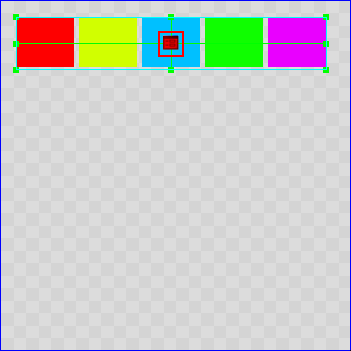
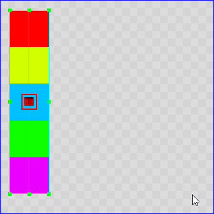
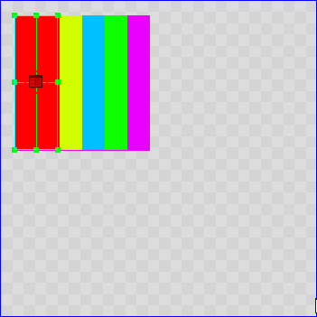
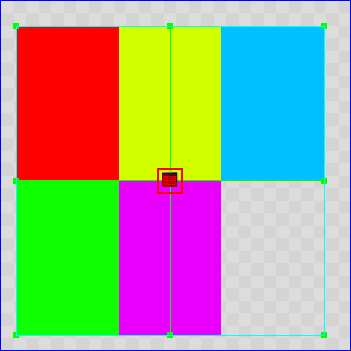

Layouts
В редакторе есть возможность использовать несколько способов размещения виджетов (лэйаутов):
- Flow Layout - лэйаут, отображение элементов которой зависит от размера его элементов.
- Linear Layout - линейный лэйаут (отображение по вертикали/горизонтали).
- Stack Layout - лэйаут в виде списка, где элементы расположены слоями.
- Table Layout - лэйаут в виде таблицы.
Также для лэйаутов используются следующие компоненты:
- Layout Cell - присваивается по-умолчанию каждому дочернему виджету, используемому в формировании лэйаута. Содержит в себе настройки особенности расположения виджета в ячейке.
- Layout Constraints - используется для задания минимальных/максимальных размеров виджета в ячейке.
При применении любого компонента Layout на виджет, его дочерним виджетам всегда добавляется кастомный компонент Layout Constraints.
Для всех Layout работают общие свойства:
- DefaultCell - настройки ячеек по-умолчанию. На данный момент там доступен один пункт - DefaultLayoutCell.
- IgnoreHidden - игнорировать настройки видимости дочерних виджетов.
DefaultLayoutCell имеет следующие свойства:
- HorizontalAlignment - выравнивание по горизонтали.
- VerticalAlignment - выравнивание по вертикали.
- ColumnSpan - количество ячеек, объединенных по вертикали.
- RowSpan - количество ячеек, объединенных по горизонтали.
- Stretch - растягивание ячеек по горизонтали/вертикали
- Ignore - игнорировать все настройки
Подробнее о каждом лэйауте:
Flow Layout - лэйаут, в котором отображение виджетов зависит от размера:
Для того, чтобы всё заработало, необходимо выставить MinSize в Layout Constraints, иначе никаких изменений не будет видно.
- Spacing - промежуток между ячейками.
- RowAligment - выравнивание строк.
- ColumnAligment - выравнивание столбцов.
- Direction - направление компоновки виджетов.

Linear Layout - лэйаут, в котором виджеты выстраиваются в одну линию, по горизонтали/по вертикали:
- Spacing - промежуток между ячейками.
- Direction - направление компоновки виджетов.

Stack Layout - лэйаут, в котором виджеты накладываются один на другой (наподобие слоёв):
- HorizontallySizeable - блокирует изменение размера внутри лэйаута по горизонтали.
- VerticallySizeable - блокирует изменение размера внутри лэйаута по вертикали.

Table Layout - лэйаут, в котором виджеты выстраиваются в виде таблицы:
- RowCount - количество строк.
- ColumnCount - количество столбцов.
- ColumnSpacing - промежуток между столбцами.
- RowSpacing - промежуток между строками.
